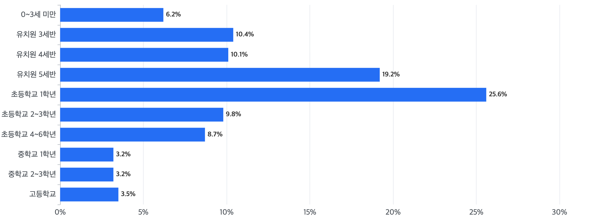

[단위 : %]
| 시기 | 비율(%) |
|---|---|
| 0~3세 미만 | 6.2 |
| 유치원 3세반 | 10.4 |
| 유치원 4세반 | 10.1 |
| 유치원 5세반 | 19.2 |
| 초등학교 1학년 | 25.6 |
| 초등학교 2~3학년 | 9.8 |
| 초등학교 4~6학년 | 8.7 |
| 중학교 1학년 | 3.2 |
| 중학교 2~3학년 | 3.2 |
| 고등학교 | 3.5 |
최초 선정·배치 시기는 ‘초등학교 1학년’ 25.6%로 최다, ‘유치원 5세반’ 19.2%가 그다음
출처 - 국립특수교육원 특수교육 실태조사(국가승인통계 제112014호)
| 용어 | 정의 |
|---|---|
| 특수교육대상자 | 시각장애·청각장애·지적장애 등으로 특수교육이 필요하다고 진단·평가되어 특수교육대상자로 선정된 사람 |
| 선정·배치 | 특수교육운영위원회의 진단·평가를 거쳐 특수교육대상자로 선정하고 특수학교·특수학급·일반학급 중 교육받을 곳을 정하는 절차 |
| 특수학교 | 특수교육대상자의 교육을 위하여 일반학교와 분리된 형태로 설립·운영되는 학교 |
| 일반학교 특수학급 | 특수교육대상자의 통합교육을 실시하기 위하여 일반학교에 설치된 학급 |
| 모집단 | 조사가 알아보려는 대상 전체의 집합. 표본조사 결과에 가중치를 적용해 이 규모를 추정함 |
| 가중치 | 표본의 응답 결과를 모집단 전체 규모로 확대 추정하기 위하여 표본 각각에 부여하는 값 |
통계는 저에게 물어보세요!
이 화면의 표를 읽어 드려요.
안녕하세요
도움이 필요하신가요?
저는 특수교육 실태조사 데이터를 쉽게
읽어 드리는 AI 해설 도우미예요.
궁금하신 점을 아래와 같이 질문하시면 대답해 드릴게요!
참고로, 저는 화면에 없는 질문에는 답변드리지 못해요.